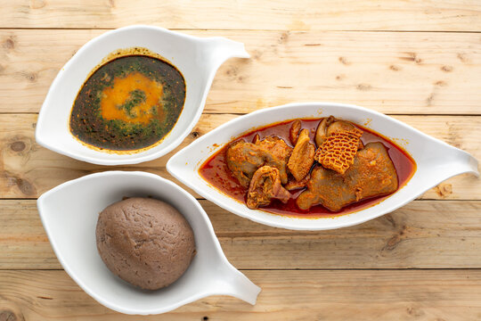

Amala

Description
A traditional Nigerian dish made with dried yam flour, ground goat meat, and various vegetables
Ingredients
- 1 cup of dried yam flour
- 6-7 slices of ground goat meat
- 1/8 cup of fresh palm oil
- Table salt and seasoning of adequate amo
- 1/2 pot of boiled water
- Proportionate amount of Egusi seeds
Steps
- Wash and drain the yam flour
- Combine the yam flour, goat meat, and oil in a pot
- Add salt and seasoning
- Boil and cook for 30 minutes
- Add water and seeds
- Serve hot